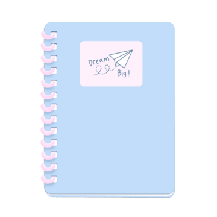

- Break tasks into small, manageable steps!
- Use a 20-minute timer for focused study sessions (The Pomodoro Technique!)
- Rewrite notes in your own words! Say the information aloud as if you are the teacher.
- Stay hydrated!! Take breaks when needed~
- Study in a tidy, cozy space that keeps you comfortable but focused!
- Eliminate any digital distractions (Trust me, it helps!)
- Create a study guide by topic. Formulate questions and problems and write complete answers yourself!
- Make examples that relate to your own experiences to help with memorization!
